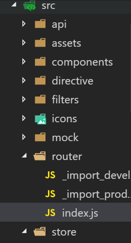
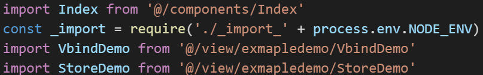
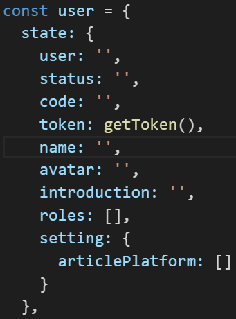

VueJS 开发常见问题集锦 请看 https://segmentfault.com/a/1190000010230843#articleHeader11
新手向：Vue 2.0 的建议学习顺序–尤雨溪 请看 https://zhuanlan.zhihu.com/p/23134551
vue-cli新建一个项目。项目中的各个文件代表的意思 请看 http://blog.csdn.net/qq_33769914/article/details/74182277
vue学习路径请看 http://www.jianshu.com/p/7f21880af897 (讲的是使用npm的方式开发)
learnVue请看 https://github.com/answershuto/learnVue
vue-router 请看 https://router.vuejs.org/zh-cn/essentials/named-routes.html 和 http://www.cnblogs.com/axl234/p/5899952.html
Vuex 请看 https://vuex.vuejs.org/zh-cn/state.html
Vuex 2.0 源码分析 请看 http://www.jqhtml.com/9032.html
Vue源码学习笔记 请看 http://jiongks.name/blog/vue-code-review/
vue搭建的后台管理系统（别人家的） 请看 https://github.com/PanJiaChen/vue-element-admin
公司自己学习vue并搭建的后台管理系统新手版（暂时啥都没有，适合入门） 请看 https://github.com/DEEP-WATER/ENVOR
Vue2.x踩坑与总结 请看 http://mrzhang123.github.io/2017/02/07/vue2/
vue中遇到的坑 — 变化检测问题（数组相关） 请看 http://www.cnblogs.com/zhuzhenwei918/p/6893496.html
Vue.js原理分析之observer模块详解 请看 http://www.jb51.net/article/105867.htm
当出现 v-for 不能用于根元素（root element）时，可以在外面套个 div。因为v-for是个循环，它返回更多的元素。导致无法渲染。可以看 https://segmentfault.com/q/1010000007411018 上面的回答。
Vue升级到2.5版本后的nextTick的改动引发的小bug 请看 https://mp.weixin.qq.com/s/6nTicqlTwvQHW_U9g47rBg
vue学习汇总（从0开始）
1.首先，我是找到 vue 的官方文档，跟着敲了一遍，真的很简单，因为首页基础内容没用到什么复杂知识，而且还是引入的 js 文件，不是脚手架搭建的，先跟着敲一遍理解。
2.过度动画这块大概看了，暂时没用到。下面的尽量都看一看。
3.基础看完其实可以带着看看 API 了，鼠标移到右上角学习自动显示。 API 好好看一遍。
4.一开始我就把网上大神写的后台管理系统 https://github.com/PanJiaChen/vue-element-admin git了下来，因为是脚手架搭建的，用到了很多知识，也绕了很长时间，我在上面列出了一些链接，比如 vue-router 和 vuex，这两个重点看。
5.由于之前写过 react 和 dva，所以感觉和 dva 很像。用那个后台管理系统来分析，先看看那个项目的 readme 文档。该项目把页面组件写在了 views 和 components 两个文件夹，路由写在 router 文件夹下的 index.js 里，_import_development 和 _import_production 两个文件是作者自己写的方法，用来方便导入组件的。
下面列出了两种导入组件的方法，第二张图不是该项目！！！
注意_import_development里面的代码，它只是方便导入views文件夹下的组件，不能用于导入component文件夹下的组件


分析 router 文件夹下 index.js 代码，举个例子：
注意：Vue.use(Router)必须要有
我选取了首页根路径路由代码，第一个 component 导入了 Layout 组件，该组件其实把左侧菜单栏 Sidebar 和 顶部 Navbar 以及 主要渲染区域组装成一个组件，redirect 重定向到 /dashboard 页面，children 对应的是子路径。children: [{ path: ‘dashboard’, component: _import(‘dashboard/index’) }] 这段代码代表到了 /dashboard 地址还要渲染出 views文件夹下dashboard文件夹下面的index.vue组件
接下来是 store 仓库
分析 store 文件夹下的代码最好先把 vuex 看看，了解下。
其实用过 dva 的人学起来就简单多了， store 文件夹相当于 dva 里面的 models 文件夹，用来处理数据和业务逻辑的，这个项目把 getters 和 store 分出来单独写了。
来到这里就要回到组件看代码了，以 Navbar.vue 举例：
- 首先从 vuex 导入 mapGetters,这在接下来有用。
- components 可以暂时不看，因为该组件需要在页面上用到其他的一些组件所以把它们导入进来
- data() 方法返回的是初始值
- computed 计算属性，里面的 …mapGetters([‘sidebar’,’name’,’avatar’]) 其实是连接 store 文件夹下 modules 文件夹下的 user.js 里面的 state 属性里面的 name,avatar 以及 app.js 里面的 state 属性里的 sidebar，也就是说它连接的是 store 里面 state 的具体属性。这里和 dva 略有不同，因为 dva 连接的是 models 文件夹下具体的 model 文件（ namespace 命名的）。

- methods，方法写在这里。注意的是 this.$store.dispatch(‘ToggleSideBar’) 这里的 dispatch 其实是向 store 文件夹下的 modules 文件夹下对应的 app.js 里面的 actions下的ToggleSideBar 分发数据(你可以认为开始处理业务逻辑了，因为通过 …mapGetters 的连接状态改变能够返回并响应式的改变页面)。PS：为什么是app.js?因为 ToggleSideBar 是写在 app.js 里面 actions 里的。哈哈哈哈哈！
分析一波app.js
- actions 相当于 dva 的 effects,mutations 相当于 dva 的 reducers。actions 里面的方法从页面接收数据，收到了使用 commit 调 mutations里面的方法。
- 你 state 里面的属性必须写在 getters 里面。所有用到的属性都必须在 getters 里面写入。1234567891011121314const getters = {sidebar: state => state.app.sidebar,visitedViews: state => state.app.visitedViews,token: state => state.user.token,avatar: state => state.user.avatar,name: state => state.user.name,introduction: state => state.user.introduction,status: state => state.user.status,roles: state => state.user.roles,setting: state => state.user.setting,permission_routers: state => state.permission.routers,addRouters: state => state.permission.addRouters}export default getters
store下面的index.js
所有的 modules 文件必须在这里导入。多看看 vuex 吧，骚年们！！！
The end: 世界是你们的，也是我的~